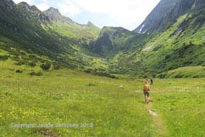
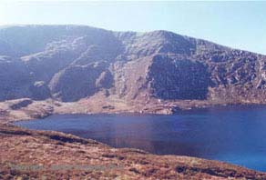

The Wicklow Mountains
- Some of the most beautiful scenery in Ireland is found in the Wicklow Mountains. There are hidden lakes, rugged moorland, craggy cliffs, and wonderful high-level walks, as well as delightful forest trails.
- The most well-known trail is the Wicklow Way. This begins in the south of County Dublin in Marlay Park, goes up to Knockree, then to Glendalough. The trail continues on to Glenmalure, passing through Tinahely, and eventually ends in Clonegal.
- The Wicklow Mountains offer some of the best walking country in Ireland. Although the mountains are tiny compared with the mountain ranges of Europe and America, the terrain can be rugged and tough for walkers, with steep climbs and boggy, uneven ground. However, the stunning views and the colour and texture of the hillsides more than make up for the hard work.

